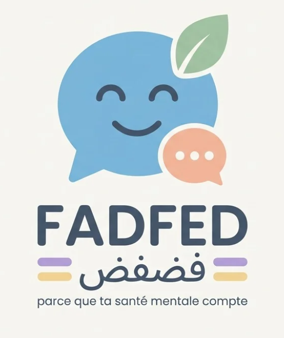

01 — Comprendre
Mettre des mots
sur ce que tu ressens.
Des informations accessibles pour mieux écouter tes émotions et tes besoins.
En savoir plusUn espace pour souffler
La santé mentale fait partie de la santé. Ici, tu trouveras des repères et des ressources pour mieux te comprendre, à ton rythme et sans jugement.

On commence simplement
Pas besoin d’avoir les bons mots ni de savoir par où commencer. Prends ce qui te fait du bien, laisse le reste.
01 — Comprendre
Des informations accessibles pour mieux écouter tes émotions et tes besoins.
En savoir plus02 — Prendre soin
Des idées simples pour t’accorder une pause et trouver tes repères au quotidien.
En savoir plus03 — En parler
Des pistes pour chercher du soutien et ouvrir la conversation avec une personne de confiance.
En savoir plusUn rappel tout doux
FADFED partage des ressources de sensibilisation et ne remplace pas l’accompagnement d’un·e professionnel·le de santé.